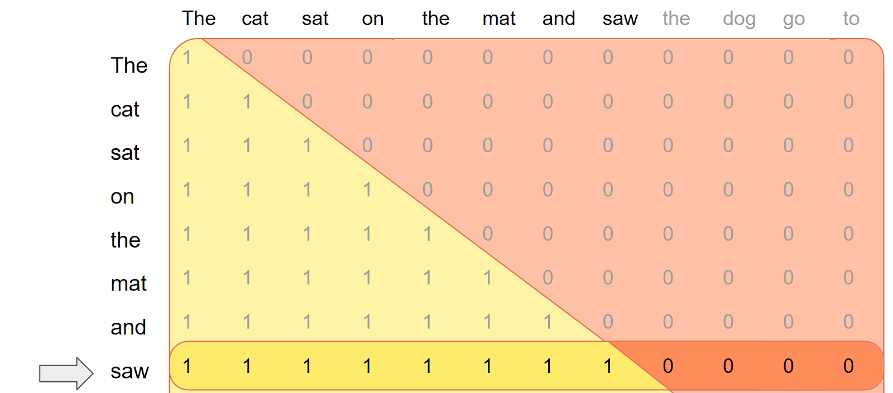
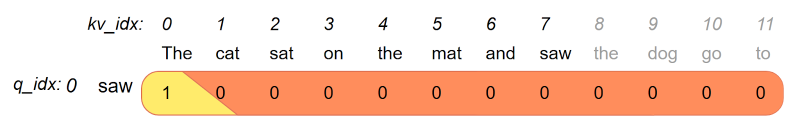
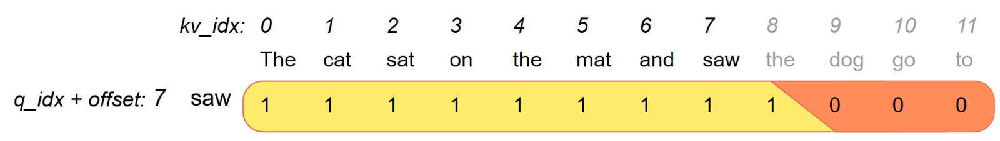
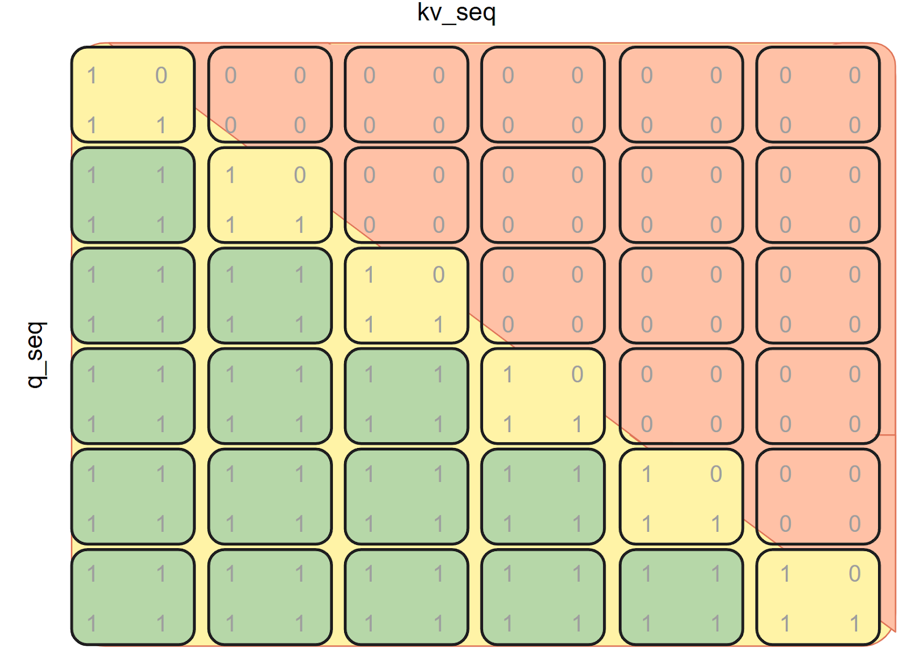
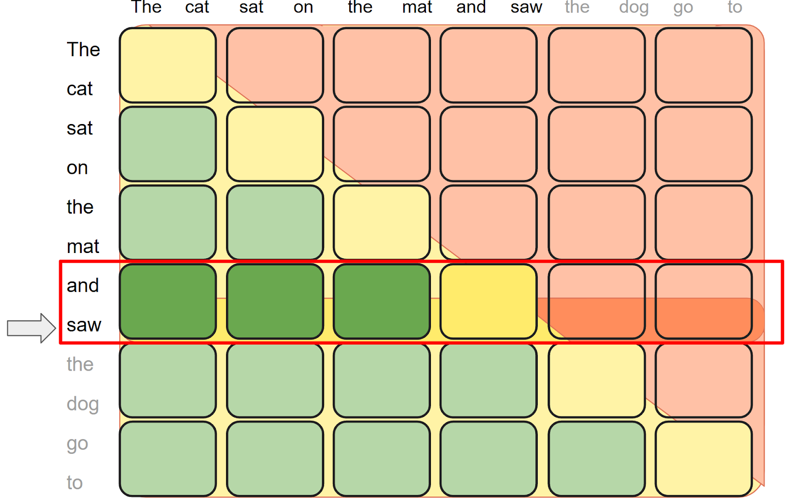
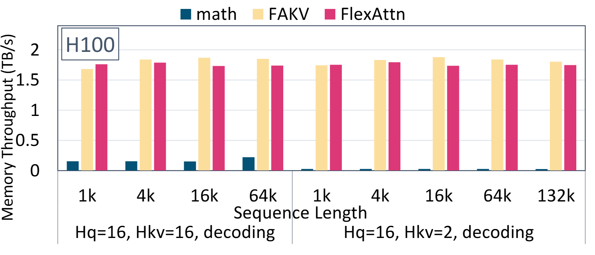
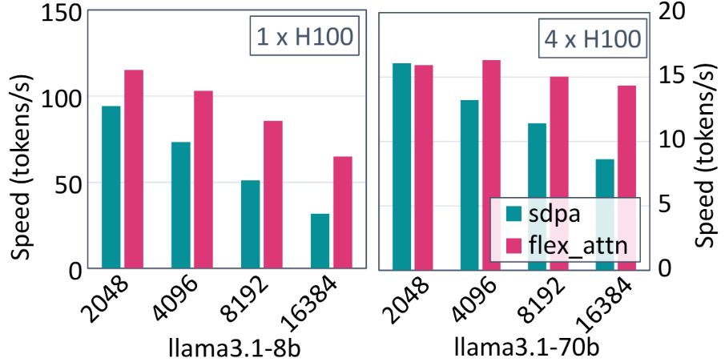
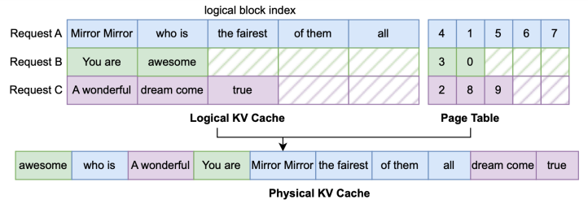
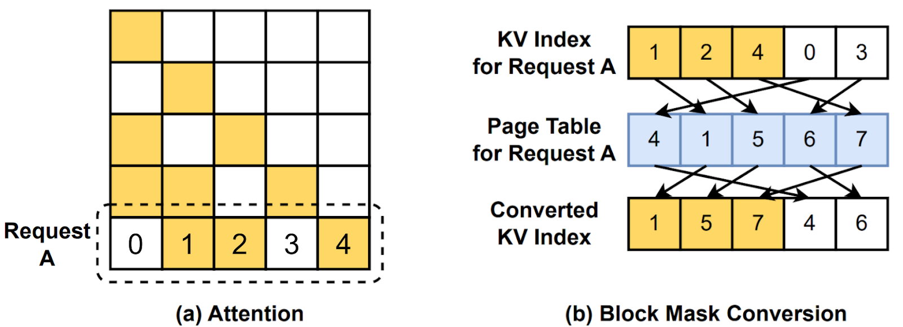
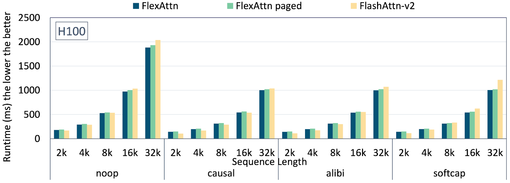

Overview
In PyTorch 2.5.0 release, we introduced FlexAttention torch.nn.attention.flex_attention
for ML researchers who’d like to customize their attention kernels
without writing kernel code. This blog introduces our decoding backend
optimized for inference, supporting GQA and PagedAttention, along with
feature updates including performance tuning guides and trainable biases
support.
If you’re looking for an easy way to play around with FlexAttention in your post-training / inference pipeline, PyTorch native post-training library torchtune and inference codebase gpt-fast already have FlexAttention integrated. Try it out!
We are excited to share that our paper on FlexAttention has been accepted for presentation at the MLSys2025 Conference held from May 12-15th in Santa Clara, California.
Title: FlexAttention: A Programming Model for Generating Optimized Attention Kernels. Poster
FlexAttention for Inference
TL;DR: torch.compile lowers flex_attention to a
fused FlashDecoding kernel
when it runs on a very short query.
One fused attention kernel does not suit all – especially in long-context LLM inference.
The decoding phase of LLM inference is an iterative process: tokens
are generated one at a time, requiring N forward passes to
generate an N-token sentence.
Fortunately, each iteration doesn’t need to recompute self-attention
over the full sentence — previously calculated tokens are cached,
therefore we only need to attend the newly generated token to the cached
context.

This results in a unique attention pattern where a short query
sequence (1 token) attends to a long key-value cache (context length up
to 128k). Traditional optimizations for square attention kernels (q_len ≈ kv_len)
don’t directly apply here. This pattern poses new challenges for GPU
memory utilization and occupancy. We build a dedicated FlexDecoding
backend optimized for long-context LLM inference incorporating
decoding-specific techniques from FlashDecoding.
FlexDecoding is implemented as an alternative backend for the torch.nn.attention.flex_attention operator. flex_attention automatically
switches to the FlexDecoding backend for its JIT compilation when given
a short query and a long KV cache. If the input shape changes
significantly, for example transitioning from the prefill phase to
decoding, JIT recompilation generates a separate kernel for each
scenario.
flex_attention = torch.compile(flex_attention)
k_cache = torch.random(B, H, 16384, D)
v_cache = torch.random(B, H, 16384, D)
...
# Prefill Phase: query shape = [B, H, 8000, D]
flex_attention(q_prefill, k_cache, v_cache, ...) # Uses FlexAttention backend optimized for prefill & training
# Decoding Phase: q_last_token shape = [B, H, 1, D]
flex_attention(q_last_token , k_cache, v_cache, ...) # Recompiles with the FlexDecoding backend
# decode 2 tokens at the same time: q_last_2_tokens shape = [B, H, 2, D]
flex_attention(q_last_2_tokens, k_cache, v_cache, ...) # No recompilation needed! Runs the decoding kernel again.Working with KV Cache
One of the key optimizations for efficient inference is maintaining a preallocated KV cache that updates in place as new tokens are generated. Instead of enforcing a specific KV cache policy with a dedicated API, FlexDecoding allows users to define and manage the KV cache themselves.
Similar to FlexAttention, FlexDecoding takes user-defined mask_mod and score_mod functions.
These functions modify attention scores before the softmax
operation.
score_mod(score, b, h, q_idx, kv_idx) -> tensor # return updated scoreScore is a scalar pytorch tensor that represents the dot product of a query token and a key token. The rest of the arguments specify which score is being computed:
bbatch indexhattention head indexq_idxtoken position in query tensorkv_idxtoken position in key/value tensor
In the decoding phase, previously calculated tokens are cached, and only the latest generated token (i-th) is used as the query. A naive causal mask on this one token query looks like this:
def causal(score, b, h, q_idx, kv_idx):
return torch.where(q_idx >= kv_idx, score, -float("inf"))
This is problematic: the new token “saw” should attend to all previously generated tokens i.e. “The cat sat on the mat and saw”, not just the first entry in the kv cache. To correct this, thescore_mod needs
to offset q_idx by i for
accurate decoding.

Creating a newscore_mod for each
token to accommodate the offset is slow since it means FlexAttention
needs to be recompiled every iteration for a different score_mod.
Instead,
We define this offset as a tensor
and increment its value at each iteration:
offset = torch.tensor(i, "cuda")
def causal_w_offset(score, b, h, q_idx, kv_idx):
return torch.where(q_idx + offset >= kv_idx, score, -float("inf"))
# Attend the i-th token
flex_attention(..., score_mod=causal_w_offset ) # Compiles the kernel here
...
# Attend the i+1-th token
offset = offset + 1 # Increment offset
flex_attention(..., score_mod=causal_w_offset ) # Doesn't need to recompile! Notably, here offset becomes a
captured tensor and it does not need to recompile if offset changes
values.
Manually rewriting your score_mod and mask_mod for offset
handling isn’t necessary. We can automate this process with a generic
rewriter:
offset = torch.tensor(i, "cuda")
def get_score_mod_w_offset(score_mod: _score_mod_signature, _offset: tensor):
def _score_mod(score, b, h, q, kv):
return score_mod(score, b, h, q + _offset, kv)
return _score_mod
def get_mask_mod_w_offset(mask_mod: _mask_mod_signature, _offset: tensor):
def _mask_mod(b, h, q, kv):
return mask_mod(b, h, q + _offset, kv)
return _mask_mod
causal_w_offset = get_score_mod_w_offset(causal, offset)BlockMask for Inference
We can also use BlockMask with inference to leverage mask sparsity. The idea is to precompute the BlockMask once during model setup and use slices of it during decoding
Precomputing BlockMask
During setup, we create a squared BlockMask for MAX_SEQ_LEN x MAX_SEQ_LEN:
from torch.nn.attention.flex_attention import create_block_mask
def causal_mask(b, h, q_idx, kv_idx):
return q_idx >= kv_idx
block_mask = create_block_mask(causal_mask, B=None, H=None, Q_LEN=MAX_SEQ_LEN,KV_LEN=MAX_SEQ_LEN)
Using BlockMask During DecodingFor the i-th token, we use a slice of the mask:
block_offset = i // block_mask.BLOCK_SIZE[0]
block_mask_slice = block_mask[:, :, block_offset]
# don't forget to use the mask_mod with offset!
block_mask_slice.mask_mod = get_mask_mod_w_offset(causal_mask)
Performance
FlexDecoding kernel performs on par with FlashDecoding (FAKV) and significantly outperforms pytorch scaled_dot_product_attention (code).
FlexDecoding boosts LLaMa3.1-8B serving performance by 1.22x-2.04x, and LLaMa3.1-70B performance by 0.99x – 1.66x compared to SDPA in gpt-fast. (code)
Paged Attention
vLLM is one of the popular LLM serving engines, powered by the efficient memory management from PagedAttention. Existing PagedAttention implementation requires dedicated CUDA kernels and shows limited flexibility on supporting emerging attention variants. In this section, we present a PT2-native PagedAttention implementation that is enabled by flex attention and torch.compile.
PagedAttention scatters KV cache to reduce memory fragmentation and
support higher batch sizes. Without PagedAttention, KV cache from the
same request are stored in a contiguous memory, requiring 2 tensor of
shape B x H x KV LEN x D. We call it a logical KV cache. Here,
KV_LEN is the maximum sequence length over all requests in a batch.
Considering the Figure 1(a), KV_LEN is 9 thus all requests must be
padded to 9 tokens, leading to large memory waste. With PagedAttention,
we can chunk each request into multiple pages of the same size page_size
and scatter these pages into a physical KV cache of shape 1 x H x
max seq len x D, where max_seq_len=n_pages x page_size. This avoids
padding requests to the same length and saves memory. Specifically, we
provide an assign API to update
KV cache via index computations:
def assign(
batch_idx: torch.Tensor,
input_pos: torch.Tensor,
k_val: torch.Tensor,
v_val: torch.Tensor,
k_cache: torch.Tensor,
v_cache: torch.Tensor,
) -> NoneBehind this assign API is a page
table, a tensor mapping logical KV cache to physical KV cache:
assign takes k_val and v_val and scatters
to physical KV cache guided by the mapping from the page table.

Paged Attention with Page Table
A natural question is, how to integrate PagedAttention with flex attention to support diverse attention variants? A naive idea is to materialize the logical KV cache before computing with flex attention. But this leads to redundant memory copy and bad performance. Another idea is to build a dedicated CUDA or Triton kernel for paged attention, similar to existing PagedAttention implementation. However, this adds much manual effort and code complexity.
Instead, we design a fused indirect memory access by converting a
logical block mask according to the page table. In FlexAttention, we
exploit BlockMask to identify logical blocks and skip redundant
computation. While Paged Attention adds an extra layer of indirect
memory access, we can further convert the logical block mask to the
physical block mask corresponding to the page table, as illustrated in
Figure 2. Our PagedAttention implementation provides a convert_logical_block_mask via
torch.gather calls:
def convert_logical_block_mask(
block_mask: BlockMask,
batch_idx: Optional[torch.Tensor] = None,
) -> BlockMask
One remaining question is how to rewrite user-specified mask_mod and score_mod for
PagedAttention. When users specify these modifications, they write with
logical indices without the knowledge of the page table maintained at
runtime. The following code shows an automated conversion at runtime
which is necessary to rewrite user-specified modifications with physical
kv indices. The new_mask_mod would
take the physical_kv_idx and convert it back to the logical_kv_idx and
apply user-specified mask_mod on the
logical_kv_idx for the correct mask. For efficiency, we maintain
physical_to_logical as a mapping from physical_kv_block to
logical_kv_block to facilitate the conversion. For correctness, we mask
out-of-boundary blocks as False with a torch.where call.
After batching logical KV caches from multiple requests into the same
physical KV cache, there are much more physical blocks than the number
of logical blocks for each request. Thus, a physical block may not have
a corresponding logical block for a specific request during block mask
conversion. By masking as False with torch.where, we can
ensure the correctness that data from different requests do not
interfere with each other. Similarly, we can convert the score_mod automatically.
def get_mask_mod(mask_mod: Optional[_mask_mod_signature]) -> _mask_mod_signature:
if mask_mod is None:
mask_mod = noop_mask
def new_mask_mod(
b: torch.Tensor,
h: torch.Tensor,
q_idx: torch.Tensor,
physical_kv_idx: torch.Tensor,
):
physical_kv_block = physical_kv_idx // page_size
physical_kv_offset = physical_kv_idx % page_size
logical_block_idx = physical_to_logical[b, physical_kv_block]
logical_kv_idx = logical_block_idx * page_size + physical_kv_offset
return torch.where(
logical_block_idx >= 0, mask_mod(b, h, q_idx, logical_kv_idx), False
)
return new_mask_modFigure 3 demonstrates the latency from Paged Attention (code). Overall, there is less than 5% overhead from Flex Attention with Paged Attention, compared with Flex Attention only. We also observe an on-par performance with Flash Attention v2. A minimal serving example further shows that PagedAttention can support 76x higher batch size when evaluating on OpenOrca dataset which includes 1M GPT-4 completions and 3.2M GPT-3.5 completions.

Trainable Biases
FlexAttention now supports trainable parameters in score_mod functions. This
feature enables users to reference tensors that require gradients within
their score_mod implementations,
with gradients automatically backpropagating through these parameters
during training.
Memory-Efficient Gradient Accumulation
Instead of materializing the full attention scores matrix,
FlexAttention uses atomic additions (tl.atomic_add) to
accumulate gradients. This approach significantly reduces memory usage
at the cost of introducing some non-determinism in gradient
calculations.
Handling Broadcasted Operations
Broadcasting operations in the forward pass (e.g., score + bias[h])
require special consideration in the backward pass. When broadcasting a
tensor across multiple attention scores within a head or other
dimensions, we need to reduce these gradients back to the original
tensor shape. Rather than materializing the full attention score matrix
to perform this reduction, we use atomic operations. While this incurs
some runtime overhead, it allows us to maintain memory efficiency by
avoiding the materialization of large intermediate tensors.
Current Limitations
The implementation currently allows only a single read from each
input tensor in the score_mod function.
For example, bias[q_idx] + bias[kv_idx] would
not be supported as it reads from the same tensor twice. We hope to
remove this restriction in the future.
Simple Example:
bias = torch.randn(num_heads, requires_grad=True)
def score_mod(score, b, h, q_idx, kv_idx):
return score + bias[h] Performance Tuning for FlexAttention
TL;DR
For optimal performance, compile FlexAttention using max-autotune,
especially when dealing with complex score_mods and mask_mods:
flex_attention = torch.compile(flex_attention, dynamic=True, mode=’max-autotune’)
What is max-autotune?
max-autotune is
a torch.compile mode
in which TorchInductor sweeps many kernel parameters (e.g., tile
size, num_stages) and
selects the best-performing configuration. This process allows kernels
to test both successful and failing configurations without issues, and
find the best viable configuration.
While compilation takes longer with max-autotune, the
optimal configuration is cached for future kernel executions.
Here’s an example of FlexAttention compiled with max-autotune:
triton_flex_attention_backward_7 0.2528 ms 100.0% BLOCKS_ARE_CONTIGUOUS=False, BLOCK_M1=32, BLOCK_M2=32, BLOCK_N1=32, BLOCK_N2=32, FLOAT32_PRECISION="'ieee'", GQA_SHARED_HEADS=7, HAS_FULL_BLOCKS=False, IS_DIVISIBLE=False, OUTPUT_LOGSUMEXP=True, PRESCALE_QK=False, QK_HEAD_DIM=128, ROWS_GUARANTEED_SAFE=False, SM_SCALE=0.08838834764831843, SPARSE_KV_BLOCK_SIZE=1073741824, SPARSE_Q_BLOCK_SIZE=1073741824, V_HEAD_DIM=128, num_stages=4, num_warps=4Why Use max-autotune for
FlexAttention?
The amount of shared memory utilized in FlexAttention depends
on score_mod and mask_mod methods.
This variability means that the preconfigured default kernel parameters
may lead to performance cliffs or even out of shared memory** **errors
on certain hardware for some masks/mods.
For instance, with document masks, default configurations can halve
GPU occupancy, reducing performance to ~75% of its potential on some
GPUs. To avoid such issues, we strongly recommend enabling max-autotune.
Updates and Enhancements
- Now available as a prototype feature in PyTorch 2.5.0
- Fixed critical correctness issues, including a bug affecting multiple calls to FlexAttention within the same call to torch.compile
Expanded Architecture Support
- Arbitrary sequence length support – no longer requires multiples of 128
- Added native grouped-query attention (GQA) support via
is_gqa=True - Enhanced dimension flexibility:
- Different QK and V head dimensions
- Non-power-of-two head dimensions
- Trainable attention biases (prototype)
Under the Hood
- New fused CPU backend
- Improved TF32 handling for float32 inputs
- Resolved various dynamic shape issues
- Output layout matching query strides
These updates make FlexAttention more robust and flexible while maintaining its core promise of combining PyTorch’s ease of use with FlashAttention’s performance benefits.